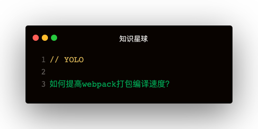

解答
- 量化工具：speed-measure-webpack-plugin
- 打包精准匹配：
- exclude/include
- resolve
- module
- extension
- module
- noParse
- externals
- IgnorePlugin
- 避免重复打包
- splitChunks
- DllPlugin
- 多核打包
- happypack
- thread-loader
- terser-webpack-plugin
- 缓存
- cache-loader
- HardSourceWebpackPlugin
- webpack自身实现的优化
- tree shaking
speed-measure-webpack-plugin量化
这个插件会统计每个插件和loader所花费的时间
const SpeedMeasurePlugin = require("speed-measure-webpack-plugin");
const smp = new SpeedMeasurePlugin();
const webpackConfig = {}
module.exports = smp.wrap(webpackConfig)
指定exclude/include
对于loader指定include目录，可以有效避免编译不必要的代码
{
module: {
rules: [
{
test: /\.js[x]?$/,
use: ['babel-loader'],
include: [path.resolve(__dirname, 'src')]
}
]
}
}
webpack自由配置优化
noParse，resolve，externals
{
module: {
noParse: /jquery|lodash/
},
resolve: {
modules: path.resolve(__dirname, 'node_modules'),
extensions: ['.js', '.json']
},
externals: {
'jquery': 'jQuery'
}
}
cache-loader
在一些性能开销较大的loader之前加cache-loader，将结果缓存在磁盘中
{
module: {
rules: [
{
test: /\.js[x]?$/,
use: ['cache-loader', 'babel-loader']
}
]
}
}
happypack 多核处理
多个子进程并发执行，子进程处理完后再把结果发给主进程
const Happypack = require('happypack')
{
module: {
rules: [
{
test: /\.js[x]?$/,
use: 'Happypack/loader?id=js',
include: [path.resolve(__dirname, 'src')]
},
{
test: /\.css$/,
use: 'Happypack/loader?id=css',
include: [
path.resolve(__dirname, 'src'),
path.resolve(__dirname, 'node_modules', 'bootstrap', 'dist')
]
}
]
},
plugins: [
new Happypack({
id: 'js', //和rule中的id=js对应
//将之前 rule 中的 loader 在此配置
use: ['babel-loader'] //必须是数组
}),
new Happypack({
id: 'css',//和rule中的id=css对应
use: ['style-loader', 'css-loader','postcss-loader'],
})
]
}
thread-loader 多核打包
把thread-loader放置在其他loader之前，会开启一个单独的线程运行
速度跟happypack差不多，不过优点是配置更简单
{
module: {
//我的项目中,babel-loader耗时比较长，所以我给它配置 thread-loader
rules: [
{
test: /\.jsx?$/,
use: ['thread-loader', 'cache-loader', 'babel-loader']
}
]
}
}
terser-webpack-plugin 多核压缩
webpack默认开启了多进程和缓存
const TerserPlugin = require('terser-webpack-plugin');
module.exports = {
optimization: {
minimize: true,
minimizer: [new TerserPlugin()],
},
};
HardSourceWebpackPlugin 中间缓存
中间缓存提高非首次构建速度
var HardSourceWebpackPlugin = require('hard-source-webpack-plugin');
module.exports = {
plugins: [
new HardSourceWebpackPlugin()
]
}
IgnorePlugin避免本地化文件和核心文件一起打包
有些项目比如moment，会把本地化文件和核心文件一起打包
module.exports = {
plugins: [
new webpack.IgnorePlugin(/^\.\/locale$/, /moment$/)
]
}
// 使用到本地化的 地方
import moment from 'moment';
import 'moment/locale/zh-cn';
DllPlugin 抽离公共代码
见上一篇【公共模块代码如何提取？】
splitChunks
见下一篇【webpack v3到v4主要区别】
webpack自身优化
tree shaking
tree shaking只是为了优化代码，不能使代码报错
使用了es6的import，生产环境会自动移除没有使用到的代码
DCE：Dead Code elimination（无用代码删除）
DCE消除：靠的是uglify压缩
为什么tree shaking删不掉代码
- 只处理函数和顶层的import/export变量，不能把没用到的类的方法消除掉
- js动态语言的特性使得静态分析变的困难
- Side Effect广泛存在
比如下面的👇，静态代码是无法分析的：
function Menu() {
}
Menu.prototype.show = function() {
}
var a = 'Arr' + 'ay'
var b
if(a == 'Array') {
b = Array
} else {
b = Menu
}
b.prototype.unique = function() {
// 将 array 中的重复元素去除
}
export default Menu;
babel编译class时是通过_createClass方法，类属性时通过Object.defineProperty赋值的
为什么这样实现？
=> 类内部声明的方法，是不可枚举的，而通过原型链声明的方法是可以枚举的，babel为了符合es6真正的语义
babel宽松模式
{
"presets": [["env", { "loose": false }]]
}
babel的宽松模式，类属性方法将会编译成直接在原型链上声明方法。
tree shaking上能够尽力的事
- 尽量不写带有副作用的代码，比如编写了自执行函数，又在函数里使用了外部变量
- 可以开启babel的loose（宽松）模式
- 如果是开发JavaScript库，请使用rollup
- 如果是js库，难以避免副作用代码，可以将功能函数或者组件打包成单独的文件或目录